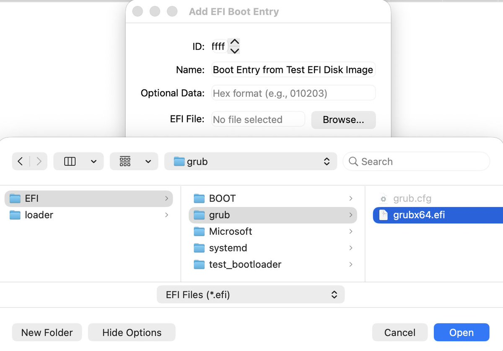
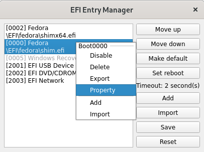

奶昔🥤
@realNyarime
@IIInoki 我之前玩SteamDeck也是做了双系统，另外SteamOS和Windows上的Steam客户端公用游戏库...
一个Windows Update直接把EFI启动项覆盖了（至此我双系统用的是LTSC，也屏蔽了Windows更新，可能对于我来说它只是个游戏机
要么就是all in Windows，那我为啥不买华硕的掌机？


鹿 𝕟𝕠𝕜𝕚𝕟𝕠𝕜𝕚 祥子
@IIInoki
跨 Win Linux 和 FreeBSD 的 EFI 启动项管理器发 v0.5.0 了
可以在多系统机器上快速切换系统/修复被 Win 更新覆盖的启动项了
https://t.co/y3A4MAz8br
支援的操作：
- 改启动顺序
- 一键重启到另一个操作系统-单次生效
- 挂载/卸载系统 EFI 分区（新）
- 从 EFI 分区文件快速创建启动项（新，不稳定） https://t.co/gG9KiHhOLH